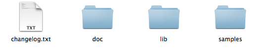

<!DOCTYPE html>
<html lang="en">
	<head>
		<meta charset="utf-8" />

		<!-- Always force latest IE rendering engine (even in intranet) & Chrome Frame
		Remove this if you use the .htaccess -->
		<meta http-equiv="X-UA-Compatible" content="IE=edge,chrome=1" />

		<title>有米广告SDK开发者文档</title>
		<meta name="viewport" content="width=device-width; initial-scale=1.0" />
		<!-- Replace favicon.ico & apple-touch-icon.png in the root of your domain and delete these references -->
		<link rel="shortcut icon" href="/favicon.ico" />
		<link rel="apple-touch-icon" href="/apple-touch-icon.png" />
		<meta name="viewport" content="width=device-width, initial-scale=1.0">
		<link href="css/bootstrap.min.css" rel="stylesheet">
		<link href="css/bootstrap-responsive.min.css" rel="stylesheet">
		<link href="css/docs.css" rel="stylesheet" />
		<script type="text/javascript" src="js/jquery-1.9.1.min.js"></script>
		<script type="text/javascript" src="js/bootstrap.min.js"></script>
		<script type="text/javascript" src="js/doc.js"></script>

		<link rel="stylesheet" href="css/xcode.min.css">
		<script src="js/highlight.pack.js"></script>
		<script>
			hljs.tabReplace = ' ';
			hljs.initHighlightingOnLoad();
		</script>
	</head>

	<body data-spy="scroll" data-target="#ym-navbar" >
		<div class="header navbar-inner">
			<div class="container clearfix">
                
                <span class="pull-left brand">有米广告 iOS SDK开发者文档</span>
			</div>
		</div>
		
		<div class="container">
			<ul class="nav nav-list bs-docs-sidenav affix" id="ym-navbar">  
				<li class='has-sub'> <a class='sub-header' href='#section_prepare'>准备工作  <i class="icon-chevron-down"></i></a><ul class='nav nav-list'><li><a href='#section_prepare_apply'>1. 注册应用，申请ID </a></li><li><a href='#section_prepare_download'>2. 下载YouMiSDK iOS 压缩包 </a></li><li><a href='#section_prepare_lib'>3. 往工程导入头文件， 静态库文件 </a></li><li><a href='#section_prepare_frameworks'>4. 为工程添加系统自带的Frameworks </a></li><li><a href='#section_prepare_init'>5. 到AppDelegate.m文件中初始化YouMiSDK </a></li></ul></li><li class='has-sub'> <a class='sub-header' href='#section_wall'>调用积分墙广告  <i class="icon-chevron-right"></i></a><ul class='nav nav-list hide'><li><a href='#section_wall_wall'>1、使用积分墙 </a></li><li><a href='#section_wall_atomatic'>2、积分托管 </a></li><li><a href='#section_wall_nofitication'>3、监听积分赚取 </a></li><li><a href='#section_wall_check'>4、手动积分查询 </a></li><li><a href='#section_wall_manual'>5、非积分托管 </a></li><li><a href='#section_wall_severs'>6、开发者使用自己的服务器管理积分 </a></li><li><a href='#section_wall_opensource'>7、使用源数据 </a></li><li><a href='#section_noPoints_rec'>8、调用推荐墙广告 </a></li></ul></li><li class='has-sub'> <a class='sub-header' href='#section_faq'>YouMiSDK 常见问题解答  <i class="icon-chevron-right"></i></a><ul class='nav nav-list hide'><li><a href='#section_faq_2'>1. 是否使用了UDID </a></li><li><a href='#section_faq_3'>2. 什么是内置AppStore </a></li><li><a href='#section_faq_4'>3. iOS6系统内置AppStore无法下载安装，应该如何使用 </a></li><li><a href='#section_faq_5'>4. 编译时提示 Undefined symbols </a></li><li><a href='#section_faq_6'>5. 如何取消获取用户地理位置 </a></li><li><a href='#section_faq_7'>6. Banner广告重复点击是否有效 </a></li><li><a href='#section_faq_8'>7. 有积分模式和无积分模式有什么区别 </a></li><li><a href='#section_faq_9'>8. 使用了YouMiView并设置了delegate，退出ViewController后偶尔崩溃 </a></li><li><a href='#section_fag_10'>9.获取广告标示符（IDFA-identifierForIdentifier）的方法 </a></li><li><a href='#section_faq_qq'>温馨提示 </a></li></ul></li><li class='has-sub'> <a class='sub-header' href='#section_function'>实用功能  <i class="icon-chevron-right"></i></a><ul class='nav nav-list hide'><li><a href='#section_function_online'>1、在线参数配置 </a></li></ul></li><li><a href='#section_log'>更新日志 </a></li>
			</ul>

			<div class="doc-content" >
				<h1 class="sdkhead" id="section_title">YouMi iOS SDK 开发者文档</h1>
<h2 class="sdkhead" id="section_prepare">准备工作</h2>
<h3 class="sdkhead" id="section_prepare_apply">1. 注册应用，申请ID</h3>
<p>1)请登陆到 http://www.youmi.net/register 注册一个开发者账号</p>
<p>2)点击<code>创建应用</code>进行新应用创建。</p>
<p>3)查看<code>应用详情</code>，获取发布ID和应用密钥，在后续初始化中使用。（<code>注意：一个appid只能严格对应一个bundle id。如果有特殊需要得联系客服</code> ）</p>
<h3 class="sdkhead" id="section_prepare_download">2. 下载YouMiSDK iOS 压缩包</h3>
<p>你下载的压缩包解压后包含了下面几个文件：</p>
<p></p>
<p><strong>doc</strong>文件夹中的doc.html为中文教程，doc_en.html是英文教程。</p>
<p><strong>lib</strong>文件夹就是要添加到你的工程的文件夹，里面包含了libYouMi.a静态文件和头文件。</p>
<p><strong>samples</strong>文件夹YouMiSDK的程序例子。</p>
<h3 class="sdkhead" id="section_prepare_lib">3. 往工程导入头文件， 静态库文件</h3>
<p>积分墙必须的头文件为</p>
<ul>
<li>
<p>YouMiConfig.h</p>
</li>
<li>
<p>YouMiWall.h</p>
</li>
<li>
<p>YouMiWallAppModel.h</p>
</li>
<li>
<p>YouMiPointsManager.h (用于查询积分)</p>
</li>
</ul>
<p>静态库文件为</p>
<ul>
<li>libYouMi.a</li>
</ul>
<h3 class="sdkhead" id="section_prepare_frameworks">4. 为工程添加系统自带的Frameworks</h3>
<ul>
<li>Security.framework</li>
<li>SystemConfiguration.framework</li>
<li>CFNetwork.framework</li>
<li>QuartzCore.framework</li>
<li>libsqlite3.dylib</li>
<li>StoreKit.framework 这个framework要改为Optional,其他都为Required</li>
</ul>
<h3 class="sdkhead" id="section_prepare_init">5. 到AppDelegate.m文件中初始化YouMiSDK</h3>
<ul>
<li>1）在AppDelegate.m文件中添加下面这个语句</li>
</ul>
<pre><code>#import &quot;YouMiConfig.h&quot;
</code></pre>

<ul>
<li>2） 在AppDelegate.m自动生成的</li>
</ul>
<pre><code>  - (BOOL)application:(UIApplication *)application didFinishLaunchingWithOptions:(NSDictionary *)launchOptions 
</code></pre>

<h5 class="sdkhead" id="section_prepare_application">的函数里面添加下面代码</h5>
<pre><code>[YouMiConfig setUserID:id_you_define]; // [可选] 例如开发者的应用是有登录功能的，则可以使用登录后的用户账号来替代有米为每台机器提供的标识（有米会为每台设备生成的唯一标识符）。
[YouMiConfig setUseInAppStore:YES];  // [可选]开启内置appStore，详细请看YouMiSDK常见问题解答
[YouMiConfig launchWithAppID:@&quot;[Your AppID]&quot; appSecret:@&quot;[Your AppSecret]&quot;]; 
</code></pre>

<p>注意替换：Your AppID和Your AppSecret为你的<code>appid</code>和<code>appSecret</code></p>
<p><strong>本文档的代码片段在SDK相应的头文件中都有比较详细的介绍，对于本文档的代码有什么疑问，请查看头文件</strong></p>
<ul>
<li>3）设置显示全屏广告（如积分墙）的全屏UIWindow(可选，推荐设置)</li>
</ul>
<p>对于使用UIKit编写的APP可以在application:didFinishLaunchingWithOptions:中的[self.window makeKeyAndVisible]之后设置：</p>
<pre><code>[self.window makeKeyAndVisible];
// 设置显示全屏广告的window   
[YouMiConfig setFullScreenWindow:self.window];
</code></pre>

<hr />
<h2 class="sdkhead" id="section_wall">调用积分墙广告</h2>
<h3 class="sdkhead" id="section_wall_wall">1、使用积分墙</h3>
<h3>积分墙初始化</h3>
<ul>
<li>在你的<strong>AppDelegate.m</strong>文件中添加下面这个语句</li>
</ul>
<pre><code>#import &quot;YouMiWall.h&quot;
</code></pre>

<ul>
<li>在设置appid、appSecret的<a href="#section_prepare_application">语句</a>之后添加下面语句，积分墙初始化。</li>
</ul>
<pre><code>[YouMiWall enable];
</code></pre>

<h3>显示积分墙广告</h3>
<p>在需要显示积分墙的地方调用下面的函数。</p>
<ul>
<li>显示积分墙：</li>
</ul>
<pre><code>#import &quot;YouMiWall.h&quot;
···
···
[YouMiWall showOffers:YES didShowBlock:^{
    NSLog(@&quot;有米积分墙已显示&quot;);
} didDismissBlock:^{
    NSLog(@&quot;有米积分墙已退出&quot;);
}];
</code></pre>

<ul>
<li>显示推荐墙（推荐墙就是无积分的积分墙）：</li>
</ul>
<pre><code>#import &quot;YouMiWall.h&quot;
···
···
[YouMiWall showOffers:NO didShowBlock:^{
    NSLog(@&quot;有米推荐墙已显示&quot;);
} didDismissBlock:^{
    NSLog(@&quot;有米推荐墙已退出&quot;);
}];
</code></pre>

<h3 class="sdkhead" id="section_wall_atomatic">2、积分托管</h3>
<p>有米SDK提供了积分托管的功能，有米SDK帮忙存储积分。开发者只需要调用消耗积分、查询剩余积分的接口就可轻松管理积分。</p>
<ul>
<li>在你的<strong>AppDelegate.m</strong>文件中添加下面这个语句</li>
</ul>
<pre><code>#import &quot;YouMiPointsManager.h&quot;
</code></pre>

<ul>
<li>在设置appid、appSecret的<a href="#section_prepare_application">语句</a>之后添加下面语句初始化积分管理</li>
</ul>
<pre><code>[YouMiPointsManager enable];
</code></pre>

<ul>
<li>需要查询剩余积分的地方，调用下面的函数</li>
</ul>
<pre><code> int *points = [YouMiPointsManager pointsRemained];
 self.pointsLabel.text = [NSString stringWithFormat:@&quot;当前积分: %d&quot;, *points];
 free(points);//使用完points后要用free释放内存。用指针的方式是为了数据安全
</code></pre>

<ul>
<li>在需要消耗积分的地方，调用下面的函数。</li>
</ul>
<pre><code>[YouMiPointsManager spendPoints:10];
</code></pre>

<h3 class="sdkhead" id="section_wall_nofitication">3、监听积分赚取</h3>
<p>如果你想知道一下YouMiSDK是否已经向有米服务器拿到积分了，那么你就需要做下面的设置了。</p>
<p>当用户获得新的积分的时候，YouMiSDK会发出一个 <strong>kYouMiPointsManagerRecivedPointsNotification</strong> 的NSNotification消息。</p>
<ul>
<li>下面是例子程序，创建了pointGotted函数去监听：</li>
</ul>
<pre><code>[[NSNotificationCenter defaultCenter] addObserver:self selector:@selector(pointsGotted:) name:kYouMiPointsManagerRecivedPointsNotification object:nil];
</code></pre>

<ul>
<li>在pointedGotted函数中设置监听到消息后该做什么（下面的程序例子针对的是积分托管，后面还会介绍非积分托管）</li>
</ul>
<pre><code>- (void)pointsGotted:(NSNotification *)notification {
    NSDictionary *dict = [notification userInfo];
    NSNumber *freshPoints = [dict objectForKey:kYouMiPointsManagerFreshPointsKey];
    // freshPoints的积分不应该拿来使用,积分已经被YouMiSDK保存了, 只是用于告知一下用户, 可以通过 [YouMiPointsManager spendPoints:]来使用积分。
    UIAlertView *alert = [[UIAlertView alloc] initWithTitle:@&quot;通知&quot; message:[NSString stringWithFormat:@&quot;获得%@积分&quot;, freshPoints] delegate:nil cancelButtonTitle:@&quot;好的&quot; otherButtonTitles:nil];
    [alert show];
    [alert release];
    self.pointsLabel.text = [NSString stringWithFormat:@&quot;当前积分: %d&quot;, [YouMiPointsManager pointsRemained]];
}
</code></pre>

<h3 class="sdkhead" id="section_wall_check">4、手动积分查询</h3>
<p>YouMiSDK提供了接口供开发者调用，可以在开发者想查询积分的时候再去查询积分。</p>
<p>当开发者想要查询积分的时候，调用下面这个函数</p>
<pre><code>[YouMiPointsManager checkPoints];
</code></pre>

<p>YouMiSDK默认情况下自动选择时刻向服务器查询积分并发出通知（如果没有调用下面这个函数，YouMiSDk默认是会自动向服务器查询积分的）</p>
<p>在<a href="#section_prepare_application">设置appid、appSecret</a>的后面写入下面的代码</p>
<pre><code>[YouMiPointsManager setManualCheck:YES];//设置为yes，禁止YouMiSDK自动向服务器发送查询积分请求
</code></pre>

<h3 class="sdkhead" id="section_wall_manual">5、非积分托管</h3>
<p><strong>如果不要SDK托管积分，不要SDK保存积分在用户设备上</strong></p>
<p>那么就需要做下面的一些配置。注意不要执行上面提到的 <a href="#section_wall_atomatic">3、积分托管（自动积分管理）</a>的操作</p>
<ul>
<li>在你的<strong>AppDelegate.m</strong>文件中添加下面这个语句</li>
</ul>
<pre><code>#import &quot;YouMiPointsManager.h&quot;
</code></pre>

<ul>
<li>在设置appid、appSecret的<a href="#section_prepare_application">语句</a>之后添加下面语句初始化积分管理</li>
</ul>
<pre><code>[YouMiPointsManager enableManually];
</code></pre>

<ul>
<li>获取积分的方式跟 <a href="#section_wall_nofitication">4、监听积分赚取</a>差不多。先建个函数pointedGotted监听获取积分的消息</li>
</ul>
<pre><code>[[NSNotificationCenter defaultCenter] addObserver:self selector:@selector(pointsGotted:) name:kYouMiPointsManagerRecivedPointsNotification object:nil];
</code></pre>

<ul>
<li>在pointedGotted函数中设置监听到消息后该做些什么</li>
</ul>
<pre><code>- (void)pointsGotted:(NSNotification *)notification {
    NSDictionary *dict = [notification userInfo];
    // 手动积分管理可以通过下面这种方法获得每份积分的信息。
    NSArray *pointInfos = [dict objectForKey:kYouMiPointsManagerPointInfosKey];    for (NSDictionary *aPointInfo in pointInfos) {
        // aPointInfo 是每份积分的信息，包括积分数，userID，下载的APP的名字
        NSLog(@&quot;积分数：%@&quot;, aPointInfo[kYouMiPointsManagerPointAmountKey]);
        NSLog(@&quot;userID：%@&quot;, aPointInfo[kYouMiPointsManagerPointUserIDKey]);
        NSLog(@&quot;产品名字：%@&quot;, aPointInfo[kYouMiPointsManagerPointProductNameKey]);

        // TODO 按需要处理
    }
}
</code></pre>

<h3 class="sdkhead" id="section_wall_severs">6、开发者使用自己的服务器管理积分</h3>
<p>如果您希望用户赚取积分的订单结算完成后，直接由有米的服务器通知您的服务器，可以使用服务器积分订单回调接口， 协议传送门: <a href="http://wiki.youmi.net/%E5%AF%B9%E5%BC%80%E5%8F%91%E8%80%85%E7%9A%84%E7%A7%AF%E5%88%86%E5%8F%8D%E9%A6%88%E6%8E%A5%E5%8F%A3">有米积分墙积分订单服务器回调协议</a></p>
<p>1.实现接收订单的回调接口时，请务必按照协议说明进行。</p>
<p>2.务必在有米主站开发者面板的目标应用详情页上设置您的回调地址。</p>
<p><strong><em>请注意，一旦您设置了积分订单回调地址，有米服务器会在用户的积分订单成功结算后第一时间通知您的服务器，但客户端将不再接收到任何积分订单记录，SDK将不会在有米服务器上拿到积分。</em></strong></p>
<h3 class="sdkhead" id="section_wall_opensource">7、使用源数据</h3>
<p>通过YouMiSDK能够方便获取到APP广告列表，我们为开发者提供APP的实用信息，方便开发者自定义界面。</p>
<p>获取APP的方法如下（以有积分模式为例），这个默认的接口是请求第1页的10个源数据：</p>
<pre><code>[YouMiWall requestOffersOpenData:YES revievedBlock:^(NSArray *theApps, NSError *error) {
            // theApps 是 YouMiWallAppModel 的对象列表
        if (!error) {
            self.apps = theApps;
            [self.table reloadData];
        }
}];
</code></pre>

<p>下面这个接口可以自定义请求第几页的多少个数据。比如：下面的例子请求第<code>2</code>页的<code>15</code>个源数据</p>
<pre><code>[YouMiWall requestOffersOpenData:YES page:2 count:15 revievedBlock:^(NSArray *theApps, NSError *error) {
        // theApps 是 YouMiWallAppModel 的对象列表
        if (!error) {
            _tableviewController.apps = theApps;
            [self.navigationController pushViewController:_tableviewController animated:YES];
        }
    }];
}];
</code></pre>

<p>当用户点击一个APP时，调用userInstallApp:方法安装APP：</p>
<pre><code>- (void)tableView:(UITableView *)tableView didSelectRowAtIndexPath:(NSIndexPath *)indexPath {
    [tableView deselectRowAtIndexPath:indexPath animated:YES];
    YouMiWallAppModel *model = self.apps[indexPath.row];
    [YouMiWall userInstallApp:model];
}
</code></pre>

<p>更详细用法请看例子程序。</p>
<h3 class="sdkhead" id="section_noPoints_rec">8、调用推荐墙广告</h3>
<p>推荐墙就是无积分的积分墙，调用方式看<a href="#section_wall_wall">使用积分墙</a></p>
<hr />
<h2 class="sdkhead" id="section_faq">YouMiSDK 常见问题解答</h2>
<h3 class="sdkhead" id="section_faq_2">1. 是否使用了UDID</h3>
<p>YouMiSDK 4.7 以及之后版本 不再使用UDID</p>
<h3 class="sdkhead" id="section_faq_3">2. 什么是内置AppStore</h3>
<p><code>内置AppStore</code> 是在应用内显示的AppStore页面。 如图 iPad 中的效果：</p>
<p></p>
<p>开启了内置AppStore，不需要跳出应用也能够安装App，但有若干限制  </p>
<ol>
<li>iOS 6 或以上系统才有此功能。</li>
<li>没有通过AppStore审核的应用的 <code>内置AppStore</code> 只能够显示，不能下载。</li>
</ol>
<h3 class="sdkhead" id="section_faq_4">3. iOS6系统内置AppStore无法下载安装，应该如何使用</h3>
<p>YouMiSDK 提供 [YouMiConfig setUseInAppStore:] 控制开启关闭 <code>内置AppStore</code>。开发期间可以暂时关闭 <code>内置AppStore</code>, 建议提交审核前开启, 方便用户使用。</p>
<h3 class="sdkhead" id="section_faq_5">4. 编译时提示 Undefined symbols</h3>
<p>这种情况一般发生在升级YouMiSDK时，或者和聚合SDK一起使用时。要作如下检查<br />
1. 检查工程里有没有两份YouMiSDK (libYouMi.a 以及 头文件)， 如果有，请去掉旧的；<br />
2. 检查工程<strong>目录</strong>下有没有两分YouMiSDK，如果有，请去掉旧的；
3. 检查编译Target里的Library Seach Paths 是否有两个YouMiSDK的路径，如果有请去掉旧的。<br />
</p>
<h3 class="sdkhead" id="section_faq_6">5. 如何取消获取用户地理位置</h3>
<p>在  </p>
<pre><code>[YouMiConfig launchWithAppID:@&quot;Your AppID&quot; appSecret:@&quot;Your AppSecret&quot;]
</code></pre>

<p>前使用</p>
<pre><code>[YouMiConfig setShouldGetLocation:NO];
</code></pre>

<h3 class="sdkhead" id="section_faq_7">6. Banner广告重复点击是否有效</h3>
<p>若一个广告被多次点击，只会记录第一次点击效果。重复的点击无效。</p>
<h3 class="sdkhead" id="section_faq_8">7. 有积分模式和无积分模式有什么区别</h3>
<p>两者作用不同：有积分模式用于激励下载，用户通过下载安装APP来获得积分；无积分模式用于推荐。</p>
<h3 class="sdkhead" id="section_faq_9">8. 使用了YouMiView并设置了delegate，退出ViewController后偶尔崩溃</h3>
<p>请记得在ViewController销毁的时候把 YouMiView 对象的 delegate 设置为nil，只要这样就不会崩溃。</p>
<h3 class="sdkhead" id="section_fag_10">9.获取广告标示符（IDFA-identifierForIdentifier）的方法</h3>
<p>NSString *adId = [[[ASIdentifierManager sharedManager] advertisingIdentifier] UUIDString];</p>
<h3 class="sdkhead" id="section_faq_qq">温馨提示</h3>
<p>如果您在使用有米广告过程中遇到了问题，或者对于产品有任何宝贵的改进意见，欢迎联系我们的客服Q:539369969</p>
<hr />
<h2 class="sdkhead" id="section_function">实用功能</h2>
<h3 class="sdkhead" id="section_function_online">1、在线参数配置</h3>
<h4>1.1 在线参数介绍</h4>
<h5>在线参数是有米平台推出的新服务，可以让开发者动态修改应用中的配置项，如欢迎语、道具价格、广告开关等等。它以Key-Value的形式使用。</h5>
<h4>1.2 使用在线参数</h4>
<h5>开发者可以在有米主站开发者面板的应用详情里面设置指定应用的在线参数，然后在代码中调用它。获取在线参数的网络请求我们采用同步请求的方式。无网络连接的状态下返回@“(null)”。</h5>
<pre><code>    NSString *value = [YouMiConfig onlineValueForKey:@&quot;testCh&quot;];
    NSLog(@&quot;在线配置参数的值：%@&quot;,value);
</code></pre>

<hr />
<h2 class="sdkhead" id="section_log">更新日志</h2>
<h5>v4.7</h5>
<ul>
<li>AppID 和 AppSecret 只在启动时通过 YouMiConfig 设置;</li>
<li>渠道号，是否使用GPS等 YouMiSDK 共用属性只在启动时通过 YouMiConfig 设置， 不再需要每个积分墙和广告条实例都设置。</li>
<li>添加关闭开启 iOS6 内置 AppStore 的功能</li>
</ul>
<h5>v4.8</h5>
<ul>
<li>添加 YouMiPointsManager</li>
<li>添加有积分插播</li>
</ul>
<h5>v5.0</h5>
<ul>
<li>极大降低嵌入难度</li>
<li>提高积分墙加载速度</li>
</ul>
<h5>v5.01</h5>
<ul>
<li>提高积分墙加载速度</li>
<li>增加开发者手动查询积分接口</li>
<li>增加开发者请求分页源数据接口</li>
</ul>
<h5>v5.10</h5>
<ul>
<li>弃用以前的积分插播，改用网页版积分插播</li>
<li>增加自定义插播展现形式(提供了spotView供开发者使用)</li>
<li>增加用户积分获得导航界面</li>
<li>增加在线参数</li>
<li>源数据增加任务提示字段</li>
</ul>
			</div>
		</div>

<!--style="margin-top:30px;" style="margin-top:60px;" -->
	</body>
</html>
